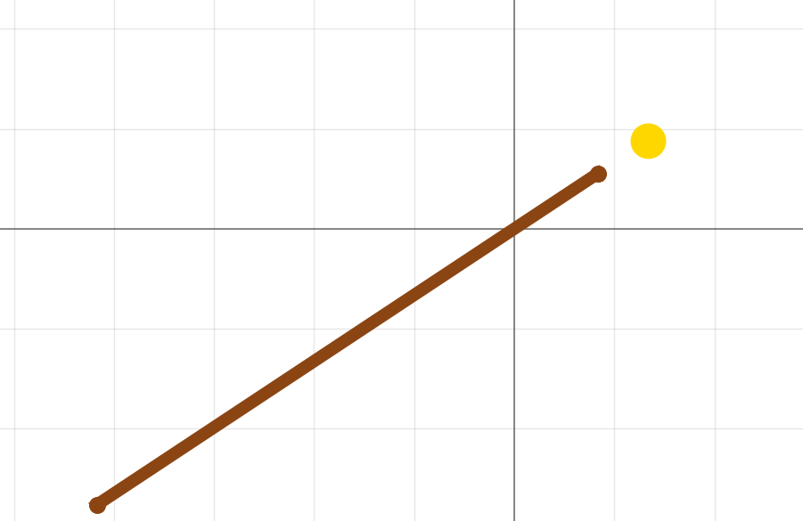

Спорт высоких достижений!!!
Требования к спортивному снаряду
1. Мобильность в перышке
2. Стабильность на дистанции
3. Комфортный вес
Теоретические основы
Момент инерции:
\( J = \int r^2 \, dm \)
Центр масс (общий):
\( x_{цм} = \dfrac{\sum m_i x_i}{\sum m_i} \)
Расчёт центра масс системы «палка + голова»
Центр масс системы: $$ x_{цм} = \frac{m_п \cdot x_{цм.палки} + m_ш \cdot (L + r)}{m_п + m_ш} $$
Начнем с самого простого и очевидного, центр масс совпадает с осью вращения!

Этого можно добится за счет:
1. Увеличения масса головы!
2. Неоднородного распределения мас шеста!
Почему увеличение массы головы — не лучшее решение
1.Резко увеличивает момент инерции: J = m·r² — масса далеко от оси вращения
2.Усиливает эффект «хлыста»: Сильные колебания конца палки после прыжка
3. Снижает собственные частоты колебаний: Палка начинает «болтаться»
4. Отодвигает центр масс далеко от руки: Ухудшает управляемость и точность
5. Сильно повышает нагрузку на спортсмена
Момент инерции системы «палка + шар»
$$ J_{\text{общий}} = \int_{0}^{L} (x - d)^2 \chi(x) \, dx + m_{\text{ш}} \cdot (L - d + r)^2 $$
$$ J_{\text{палки}} = \int_{0}^{L} (x - d)^2 \chi(x) \, dx $$
$$ J_{\text{палки}} = I_0 - 2d \cdot m_{\text{п}} x_{\text{цм}} + d^2 m_{\text{п}} $$
где
\( d \) — расстояние от начала палки до точки хвата
\( \chi(x) \) — переменная линейная плотность